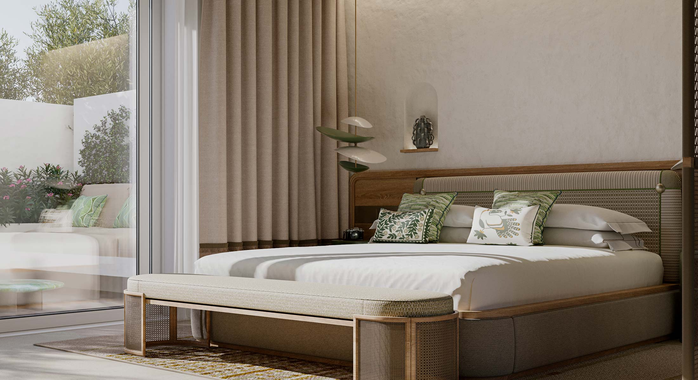
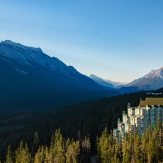

Summary
- Hub-and-spoke with 3–4 bases, minimal packing.
- One beach-focused stay + one masseria stay.
- Value‑sensitive 4+ star properties.
Use the notes boxes below for Laura's comments.
Base 1 — Bari (1 night)

Base 2 — Beach Resort (4 nights)
Masseria Furnirussi (Emblems Collection)
Serrano / Otranto area




Base 3 — Masseria / Valle d'Itria (3 nights)


Base 4 — Lecce (3 nights)


Base 5 — Bari Airport Hotel (1 night, Sept 24)
Parco dei Principi Hotel Congress & Spa
Bari Palese
Near airport
Closest to BRI for a fast early‑morning transfer.
Day‑by‑day (tight draft)
Day 1 (Sep 13): Arrive BRI evening → Bari overnight.
Days 2–5 (Sep 14–17): Beach base. Otranto coastline, Baia dei Turchi, Torre dell'Orso, or Porto Badisco.
Day 6 (Sep 18): Drive to Valle d'Itria masseria. Sunset in Ostuni.
Days 7–8 (Sep 19–20): Alberobello, Locorotondo, Martina Franca. Easy drives, late dinners.
Days 9–11 (Sep 21–23): Lecce base. Baroque center + Salento coast day trips (Otranto, Gallipoli).
Day 12 (Sep 24): Morning in Lecce → drive to Bari (~2h) → overnight near BRI airport (early flight next day).
Day 13 (Sep 25): Depart BRI 08:50 → ATL.
Logistics Snapshot
- Car rental: BRI airport, 10–11 days.
- Driving total: ~400–500 km.
- Avoid ZTL zones in historic centers. Park outside old towns.
- Weather (mid‑Sept): 24–27°C, warm water.